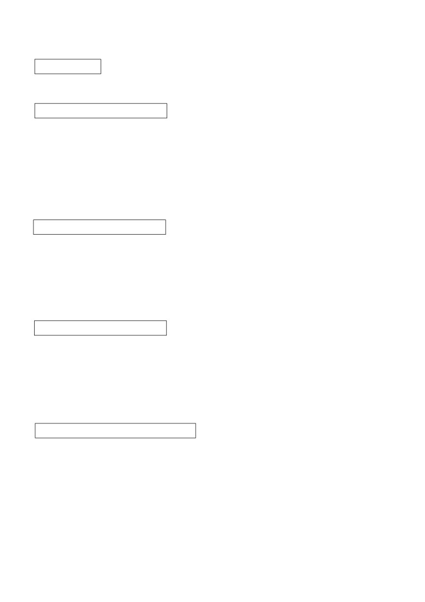

第３８課
課:38 (頁:1/9)
ことば
1. そだてます Ⅱ
育てます
養育，撫育，撫養
2. はこびます Ⅰ
運びます
運送
3. なくなります Ⅰ
亡くなります
去世（しにます(第39課）的
鄭重說法）
4. にゅういんします Ⅲ 入院します
住院
5. たいいんします Ⅲ
退院します
出院
6.
いれます
Ⅱ
入れます
打開〔
電源〕
［でんげんを～］
［電源を～］
7.
きります
Ⅰ
切ります
切斷〔
電源〕
［でんげんを～］
［電源を～］
8.
かけます
Ⅱ
掛けます
鎖上 鎖〕
［かぎを～］
9. きもちが いい
気持ちがいい
心情好，舒服
10. きもちが わるい
気持ちが悪い
心情不好，不舒服
11. おおきな～
大きな～
大的～
12. ちいさな～
小さな～
小的～
13. あかちゃん
赤ちゃん
嬰兒
14. しょうがっこう
小学校
小學
15. ちゅうがっこう
中学校
中學
16. えきまえ
駅前
車站前
17. かいがん
海岸
海岸
18. うそ
撒謊，謊言
19. しょるい
書類
文件
20. でんげん
電源
電源
21. ～せい
～製
～製
22.［あ、］いけない。
〔噢，〕糟了！（用於當人做錯了某事時
23.
おさきに
お先に
我先走了。/
我先走一步。
［しつれいします］。
［失礼します］。
げん ばく
24.
※原爆ドーム
廣島原子彈爆炸紀念館
かい わ
課:38 (頁:2/9)
会話
かい らん
回覧
通知，回覽
けん きゅうしつ
研究室
研究室
きちんと
整潔地，整齊地，很好地
せい り
整理します Ⅲ
整理，收拾
ほん
～と いう 本
叫…的書
さつ
…冊
…本（書的量詞）
はんこ
印章
お
押します［はんこを～］ Ⅰ
蓋〔章〕
よ
もの
…読み物…………………………………………………………………
ふた ご
双子
孿生子，雙胞胎
し まい
姉妹
姊妹
ねん せい
5年生
五年級學生
に
似て います Ⅱ
像，相似
せい かく
性格
性格
おとなしい
文靜，老實，安靜
せ わ
世話を します Ⅲ
照顧
じ かん
時間が たちます Ⅰ
時間流逝
だい す
大好き［な］
很喜歡〔的〕
てん
…点
…分
クラス
班，班級
けんかします Ⅲ
吵架，打架
ふ し ぎ
不思議［な］
不可思議〔的〕
………………………………………………………………………………
ぶん けい
文型
え
たの
1. 絵を かくのは 楽しいです。
ほし
み
す
2. わたしは 星を 見るのが 好きです。
さい ふ
も
く
わす
3. 財布を 持って 来るのを 忘れました。
に ほん
き
きょ ねん
がつ
4. わたしが 日本へ 来たのは 去年の 3月です。
れい ぶん
例文
にっ き
つづ
1. 日記を 続けて いますか。
みっ か
…いいえ、3日で やめて しまいました。
はじ
かん たん
つづ
むずか
始めるのは 簡単ですが、続けるのは 難しいですね。
はな
にわ
2. 花が たくさん あって、きれいな 庭ですね。
…ありがとう ございます。
おっと
はな
そだ
じょ うず
夫は 花を 育てるのが 上手なんです。
とうきょう
課:38 (頁:3/9)
3.
東京は どうですか。
ひと
おお
ある
はや
…人が 多いですね。 それに みんな 歩くのが 速いですね。
4. あ、いけない。
…どう したんですか。
くるま
まど
し
わす
車の 窓を 閉めるのを 忘れました。
き むら
あか
う
し
5. 木村さんに 赤ちゃんが 生まれたのを 知って いますか。
し
…いいえ、知りませんでした。 いつですか。
げつ
1か月ぐらいまえです。
はじ
す
ひと
おぼ
6. 初めて 好きに なった 人の ことを 覚えて いますか。
かの じょ
はじ
あ
しょう がっ こう
きょう しつ
…ええ。 彼女に 初めて 会ったのは 小学校の 教室です。
かの じょ
おん がく
せん せい
彼女は 音楽の 先生でした。
かい わ
会話
かた
す
片づけるのが 好きなんです
だい がく しょく いん
せん せい
かい らん
大学職員：
ワツト先生、回覧です。
お
ワット ：
あ、すみません。 そこに 置いといて ください。
だい がく しょく いん
せん せい
けん きゅうしつ
大学職員：
先生の 研究室は いつも きれいですね。
かた
す
ワット ：
わたしは 片づけるのが 好きなんです。
だい がく しょく いん
ほん
なら
もの
せい り
お
大学職員：
本も きちんと 並べて あるし、物も 整理して 置いて
せい り
じょう ず
あるし……。 整理するのが 上手なんですね。
むかし
じょう ず
せい り
ほう ほう
ほん
か
ワット ：
昔 「上手な 整理の 方法」と いう 本を 書いた
ことが あるんです。
だい がく しょく いん
大学職員：
へえ、すごいですね。
う
ワット ：
あまり 売れませんでしたけどね。
さつ
も
き
よかったら、1冊 持って 来ましょうか。
------------------------------
だい がく しょく いん
大学職員：
おはよう ございます。
ほん
も
く
わす
ワット ：
あ、本を 持って 来るのを 忘れました。 すみません。
だい がく しょく いん
かい らん
お
大学職員：
いいですよ。 でも、回覧に はんこを 押すのを
わす
せん げつ
お
忘れないで ください。 先月も 押して
ありませんでしたよ。
れん しゅう
課:38 (頁:4/9)
練習 Ａ
ひ とり
に もつ
む り
1.
一人で この 荷物を
はこぶ
の
は
無理です。
あさ
はや
き も
朝 早く
さんぽする
の
気持ちが いいです。
ボランテイアに
さんかする
の
おもしろいです。
おん がく
す
2.
わたしは
クラシツク音楽を
きく
の
が
好きです。
え
へ た
絵を
かく
の
下手です。
はや
あるく
の
速いです。
おそ
たべる
の
遅いです。
でん き
わす
3.
電気を
けす
の
を 忘れました。
くすり
薬を
のむ
の
やま だ
山田さんに
れんらくする
の
た なか
し
4.
あした 田中さんが
たいいんする
の
を 知って いますか。
らい しゅう
きん よう び
じゅ ぎょう
来週の 金曜日は 授業が
ない
の
えき まえ
おお
駅前に 大きな ホテルが
できた
の
むすめ
ほっ かい どう
ちい
まち
5.
娘が
うまれた
の
は
北海道の 小さな 町
です。
せい
くつ
わたしが
ほしい
の
イタリア製の 靴
か ぞく
けん こう
いちばん
たいせつな
の
家族の 健康
れん しゅう
練習 Ｂ
れい
かの じょ
はな
たの
1. 例： 彼女と 話します・楽しいです
かの じょ
はな
たの
→ 彼女と 話すのは 楽しいです。
でん しゃ
まい にち
かよ
たい へん
1)
ラッシュの 電車で 毎日 通います・大変です →
まい にち
さけ
の
からだ
わる
2)
毎日 お酒を 飲みます・体に 悪いです →
あ
き も
3)
スポーツの あとで、シャワーを 浴びます・気持ちが いいです →
でん わ
うん てん
あぶ
4)
電話しながら 運転します・危ないです →
れい
す
はな
そだ
2.
例： わたしは 好きです・花を 育てます
はな
そだ
す
→ わたしは 花を 育てるのが 好きです。
す
かい がん
さん ぽ
1)
わたしは 好きです・海岸を 散歩します →
きら
ま
2)
わたしは 嫌いです・負けます →
かれ
じょう ず
こ
ほ
3)
彼は 上手です・子どもを 褒めます →
かれ
へ た
い
4)
彼は 下手です・うそを 言います →
かの じょ
はや
はし
5)
彼女は 速いです・走ります →
かの じょ
おそ
あさ
お
6)
彼女は 遅いです・朝 起きます →
れい
か
もの
い
たまご
か
3.
例： 買い物に 行きました・卵を 買いませんでした
か
もの
い
たまご
か
わす
→ 買い物に 行きましたが、卵を 買うのを 忘れました。
しゅくだい
も
き
課:38 (頁:5/9)
1)
宿題を しました・きょう 持って 来ませんでした →
とも だち
て がみ
だ
きっ て
2)
友達に 手紙を 出しました・切手を はりませんでした →
じゅうしょ
か
かの じょ
れん らく
3)
住所が 変わりました・彼女に 連絡しませんでした →
かれ
さそ
じ かん
い
4)
彼を コンサートに 誘いました・時間を 言いませんでした →
れい
すず き
けっ こん
4.
例： 鈴木さんが 結婚します
すず き
けっ こん
し
→ 鈴木さんが 結婚するのを 知って いますか。
さ とう
かい しゃ
1)
佐藤さんが 会社を やめます →
お がわ
にゅう いん
2)
小川さんが 入院して います →
ねん
まち
はっ けん
3)
2,000年まえの 町が 発見されました →
し あい
に ほん
ま
4)
きのうの サッカーの 試合は 日本が ブラジルに 負けました →
れい
はし
5. 例： こい 橋が できます・いつ
はし
→ こい 橋が できるのは いつですか。
か
1)
その かばんを 買いました・どこ →
こう ぎ
はじ
なん じ
2)
講義が 始まります・何時 →
でん わ
はつ めい
3)
電話を 発明しました・だれ →
げん かん
まえ
と
くるま
4)
玄関の 前に 止めて あります・だれの 車 →
くに
みやげ
ゆう めい
なん
5)
あなたの 国の お土産で いちばん 有名です・何 →
ね だん
やす
6)
この カメラだけ 値段が 安いです・どうして →
れい
きゅうしゅう
ちい
まち
う
6. 例： わたしは 九州の 小さな 町で 生まれました。
う
きゅうしゅう
ちい
まち
→ わたしが 生まれたのは 九州の 小さな 町です。
ちち
ねん
な
1)
父は 3年まえに 亡くなりました。 →
かの じょ
げん じ もの がたり
けん きゅう
2)
彼女は 「源氏物語」を 研究して います。 →
こ
ちゅう がっ こう
かよ
3)
子どもは あの 中学校に 通って います。 →
さくら
き
えだ
お
4)
わたしが 桜の 木の 枝を 折りました。 →
がつ
ねん
いそが
5)
12月は
1年で いちばん 忙しいです。 →
かた
かん たん
6)
この やり方が いちばん 簡単です。 →
れんしゅう
練習 Ｃ
た なか
でん しゃ
ほん
よ
1. Ａ: 田中さんは 電車では 本を 読まないんですね。
そと
み
す
Ｂ: ええ。 わたしは 外を 見るのが 好きなんです。
そと
み
外を 見るのは おもしろいですよ。
Ａ: そうですね。
つか
1) エレベーターを 使いません
ある
歩きます
からだ
体に いいです
て がみ
か
2) ワープロで 手紙を 書きません
て
か
手で 書きます
たの
楽しいです
課:38 (頁:6/9)
2. Ａ:
あ、いけない。
Ｂ: どう したんですか。
つくえ
か
わす
Ａ: 机の かぎを 掛けるのを 忘れました。
さき
かえ
すみませんが、先に 帰って ください。
さき
しつ れい
Ｂ:
じゃ、お先に 失礼します。
しょ るい
1) 書類を しまいます
でん げん
き
2) コンピューターの 電源を 切ります
りょ こう
き
3. Ａ:
すみません。 この 旅行に ついて 聞きたいんですが。
Ｂ: はい、どうぞ。
りょ こう
さん か
なん にん
Ａ:
旅行に 参加するのは 何人ですか。
にん
Ｂ:
10人です。
Ａ: そうですか。
ひろ しま
けん がく
1) 広島で 見学します
どこ
げん ばく
じ どう しゃ こう じょう
原爆ドームと 自動車工場
とう きょう えき
つ
2) 東京駅に 着きます
なん じ
何時
ご ご
じ
ぷん
午後 5時23分
もん だい
問題
れい
す
1.
1)
…例： はい、好きです。
れい
じょう ず
2)
…例： はい、上手です。
れい
たい へん
おも
3)
…例： はい、大変だと思います。
れい
し
4)
…例： いいえ、知りませんでした。
れい
きょ ねん
がつ
5)
…例： 去年の3月です。
2.
1)
( ○ )
2)
( ○ )
3)
( ○ )
4)
( ○ )
5)
( × )
れい
ひま
やま
のぼ
3. 例：
「わたしは 暇な とき よく 山に 登ります。」
やま
のぼ
す
→ わたしは ( 山に 登る ) のが 好きです。
た なか
つく
1)
「この ケーキ、田中さんが 作ったんですか。おいしいですね。」
た なか
つく
じょう ず
→ 田中さんは ( ケーキを作る ) のが 上手です。
やま だ
な まえ
か
2)
「これ、山田さんの レポートですか。名前が 書いて ありませんよ。」
やま だ
な まえ
か
わす
→ 山田さんは レポートに ( 名前を書く ) のを 忘れました。
いけ だ
ふる
でん わ ばん ごう
でん き
ばん ごう
せん げつ
3)
「池田さん、これは 古い 電話番号です。パワー電気の 番号は 先月
か
変わりましたよ。」
いけ だ
でん き
でん わ ばん ごう
せん げつ
か
→ 池田さんは （ パワー電気の電話番号が［先月］変わった ）
はこ
おも
ひとり
も
4)
「この 箱、重いですね。一人では 持てませんね。」
ひとり
はこ
も
む り
→ 一人で ( この箱を持つ ) のは 無理です。
れい
くるま
うん てん
つま
課:38 (頁:7/9)
4.
例： あなたが 車を 運転して いたんですか。 ( 妻 )
うん てん
つま
…いいえ。 ( 運転して いたのは 妻です )。
みせ
ひる
いそが
ゆう がた
1)
店は 昼が いちばん 忙しいんですか。 ( 夕方 )
いそが
ゆう がた
…いいえ。 ( いちばん忙しいのは夕方です )。
き むら
とうきょう
う
きゅうしゅう
2)
木村さんは 東京で 生まれたんですか。 ( 九州 )
う
きゅうしゅう
…いいえ。 ( 生まれたのは九州です )。
なに
さい ふ
3)
ほかに 何か とられましたか。 ( 財布だけ )
さい ふ
…いいえ。 ( とられたのは財布だけです )。
ちゅう ごく ご
かん こく ご
ご
はな
ちゅう ごく ご
4)
中国語と 韓国語と タイ語が 話せるんですか。 ( 中国語だけ )
はな
ちゅう ごく ご
…いいえ。 ( 話せるのは中国語だけです )。
れい
こ
う
5.
例： 子ども ( が ) 生まれます。
よる
おそ
し ごと
からだ
1)
夜 遅くまで 仕事を するの ( は ) 体に よくないです。
も
く
わす
2)
カメラを 持って 来るの ( を ) 忘れました。
み
す
3)
わたしは サッカーを 見るの ( が ) 好きです。
はじ
に ほん
き
ねん
4)
わたしが 始めて 日本へ 来たの ( は ) 5年まえです。
れい
しゅ み
せ かい
きっ て
あつ
6.
例： わたしの 趣味は 世界の 切手を 集める ( ①の ②こと ) です。 （②）
か ちょう
れん らく
1)
課長に 連絡した ( ①の ②こと ) は おとといです。 （①）
すず き
ご
はな
2)
鈴木さんは ベトナム語を 話す ( ①の ②こと ) が できます。 （②）
ふう とう
じ ぶん
な まえ
か
わす
3)
封筒に 自分の 名前を 書く ( ①の ②こと ) を 忘れました。 （①）
はは
4)
わたしは 母に しかられた ( ①の ②こと ) が ありません。 （②）
7.
しずかと あすか
ふた ご
し まい
いま しょう がっ こう ねん せい
しずかと あすかは 双子の 姉妹です。 今 小学校5年生です。
かお
に
せい かく
ちが
顔は ほんとうに よく 似て いますが、性格は ずいぶん 違います。
あね
やさ
おんな
こ
ほん
姉の しずかは おとなしくて、優しい 女の 子です。 本を
よ
いぬ
せ わ
す
とく
がい こく
読んだり 犬の 世話を したり するのが 好きです。 特に 外国の
しょう せつ
す
ほん
よ
じ かん
わす
小説が 好きで、本を 読んで いると、時間が たつのを 忘れて
しまいます。
いもうと
そと
あそ
だい す
し けん
妹 の あすかは 外で 遊ぶのが 大好きです。 試験は いつも
てん
はし
はや
50点ぐらいですが、走るのは クラスで いちばん 速いです。 それに
おとこ
こ
ま
男の 子と けんかしても、負けません。
なに
か
かんが
か
何か 買う ときも、よく 考えてから、買うのは しずかです。
ほ
おも
なん
か
あすかは 欲しいと 思ったら、何でも すぐ 買います。
おな
りょうしん
おな
ひ
う
おな
いえ
せい かつ
同じ 両親から 同じ 日に 生まれて、同じ 家で 生活して いる
ふたり
せい かく
ちが
ふ し ぎ
2人の 性格が こんなに 違うのは 不思議です。
かお
せい かく
に
1)
( × ) しずかと あすかは 顔も 性格も 似て います。
がい こく
しょうせつ
よ
す
2)
( ○ ) しずかは 外国の 小説を 読むのが 好きです。

おんな
こ
課:38 (頁:8/9)
3)
( × ) あすかは おとなしい 女の 子です。
ほ
おも
か
4)
( ○ ) 欲しいと 思ったら、すぐ 買うのは あすかです。
文法
１.
動詞普通形 の
動詞普通形後加上助詞「の
」，這個句子就可以名詞化。
２.
動詞字典形 のは 形容詞 です
①テニスは おもしろいです。
網球很有趣。
②テニスを するのは おもしろいです。 打網球很有趣。
み
③テニスを 見るのは おもしろいです。 看網球很有趣。
①只是就運動項目的“網球”進行敘述；②是對“打網球”；③是對“看網球”
做了更具體的說明。在這個句型中常用的形容詞有「むずかしい」「やさしい」
「おもしろい」「たのしい」「きけん［な］」「たいへん［な］
」等。
３
動詞字典形 のが 形容詞 です
はな
す
④わたしは 花が 好きです。
我喜歡花。
はな
そだ
す
⑤わたしは 花を 育てるのが 好きです。 我喜歡種花。
とう きょう
ひと
ある
はや
⑥東京の 人は 歩くのが 速いです。 東京人走路很快。
這個句型中應使用表示嗜好、技能、能力的形容詞，例如：「すき［な］」「き
らい［な］」 「 じょうず［な］」 「 へた［な］」 「 はやい」 「 おそい」等。
わす
４
動詞字典形 のを 忘れました
忘了…
わす
⑦かぎを 忘れました。
忘了鑰匙了。
ぎゅうにゅう
か
わす
⑧牛乳を 買うのを 忘れました。
忘了買牛奶了。
くるま
まど
し
わす
⑨車の 窓を 閉めるのを 忘れました。 忘了關車窗了。
例句⑧表示“預定好要買牛奶卻忘了”；例句⑨則是“應該關上車窗的，結果沒
關窗就下車了”的意思。
し
５
動詞普通形 のを 知って いますか
你知道…嗎
這是詢問對方是否知道「の
」前面敘述的事情。
すず き
らい げつ けっ こん
し
⑩鈴木さんが 来月 結婚するのを 知って いますか。
你知道鈴木下個月要結婚嗎？
〔註〕「しりません」和「しりませんでした」的區別
き むら
あか
う
し
⑪木村さんに 赤ちゃんが 生まれたのを 知って いますか。
し
…いいえ、 知りませんでした。
你知道木村小姐生小孩了嗎？
…不，不知道。
じゅう しょ
し
課:38 (頁:9/9)
⑫ミラーさんの 住所を 知って いますか。
し
…いいえ、 知りません。
你知道米勒先生的地址嗎？
…不，不知道。
例句⑪中，聽話人被問之前並不知道“生了孩子”，因為被問才知道的，所以回
答「しりませんでした」。而例句⑫中無論是被問前還是被問後都不知道，所以
回答「しりません
」。
６
動詞
普通形
}
い形容詞
のは 名詞 です
な形容詞 普通形
}
}
名詞
～だ→～な
むすめ
ほっ かい どう
ちい
まち
う
娘は 北海道の 小さな 町で 生まれました。
女兒在北海道一個很小的城鎮出生的。
むすめ
う
ほっ かい どう
ちい
まち
⑬娘が 生まれたのは 北海道の 小さな 町です。
女兒出生在北海道一個很小的城鎮。
げつ
ねん
いそが
１２月は １ 年で いちばん 忙しいです。
12月在一年裡最忙。
ねん
いそが
がつ
⑭１年で いちばん 忙しいのは １２ 月です。
一年裡最忙的是
12月。
這個句型用於「の」代替表示物、人、場所等的名詞，並作為話題提出時。例如
例句⑬是“女兒出生的地點”；例句⑭是將“一年裡最忙的時候”作為話題提出
，與其相關的訊息用「は～
」表示。
７ . ～ときも／～ときや／～ときの／～ときに、 等
因為在第23課學習過的「～とき」中的「とき」是名詞，所以它後面可以接各種
助詞。
つか
さび
いなか
おも
だ
⑮疲れた ときや 寂しい とき、 田舎を 思い 出す。
累了和寂寞的時候就會想家。
う
おお さか
す
⑯生まれた ときから、ずっと 大阪に 住んで います。
出生以後一直住在大阪。